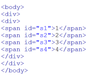
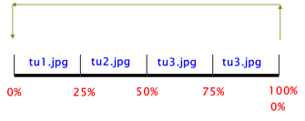
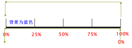
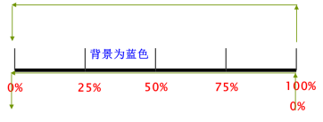
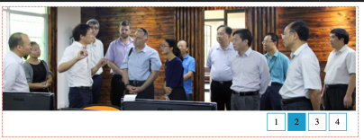

实验11 动画
² 实验内容
n Dreamweaver cs6软件创建站点
n 掌握animation动画设计
n 使用三次贝塞尔曲线函数
² 实验要求和说明
n 本实验模仿http://cs.hzu.edu.cn网站动态图片切换，如图1所示。
图1 本实验模仿网站的图片切换外观
n 本实验提供了3张图片，“tu1.jpg”、“tu2.jpg”、“tu3.jpg”，每张图片的大小都是665*196px
n 为了简化设计，先不设计图1左下角的图像文字说明
² 实验步骤
n Html5代码
本实验提供了“exp11.html”，已经设计好了html代码，如图2所示。里面的div装1、2、3、4几个数字，外面的div背景就是3张图片

图2 本实验html代码
n css设计
说明：除了已经定义的4个id，不要再定义新的id和class
一、外部层设计
从图1看到，外部层宽和图片宽一样，高比图片高一些。外部层样式设计以下属性：
1、宽669px
2、高245px
3、背景图片tu1.jpg
4、背景图片不重复
5、定位方式为相对定位（它定位为相对定位，里面层才能相对它定位）
6、加一条细的边框线
二、span标记设计以下属性
1、宽为2em（文字宽为1em）
2、高为2em;
3、display属性设计为inline-block
4、文本水平居中对齐
5、文本垂直居中对齐
6、左边距2em
7、加蓝色细的边框线
三、内层设计以下属性
1、宽为 ** em（**自己计算）
2、文本水平居中
3、定位方式为绝对定位
4、top属性为 ** px （**通过图1和图片的高自己计算）
5、right属性为**px （**自己计算，right指的是本元素右边与外层右边距离多少像素）
看看设计的外观是否与图1类似了。
n 动画设计
一、背景图片切换动画
1、对外面的层添加animation属性，格式为：
animation 动画名 16s 动画循环属性 动画速度控制属性
-moz-animation 动画名 16s 动画循环属性 动画速度控制属性
-webkit-animation 动画名 16s 动画循环属性 动画速度控制属性
-o-animation 动画名 16s 动画循环属性 动画速度控制属性
说明：
大家可以试试先不添加动画速度控制属性，会发现图片切换非常缓慢，显得不干脆，原因是动画切换速度采用匀速方式，在4s钟时间内缓慢地切换图片。最好的修改方式为添加三次贝塞尔曲线函数，函数的值自己通过网站http://yisibl.github.io/cubic-bezier设计，要求在很短的时间动画完成，然后再保持动画完成后状态。
因此外部层需要添加的有关动画的语句为：
animation 动画名 16s 动画循环属性 cubic-bezier(n,n,n,n)
-webkit-animation 动画名 16s 动画循环属性 cubic-bezier(n,n,n,n)
-o-animation 动画名 16s 动画循环属性 cubic-bezier(n,n,n,n)
-moz-animation 动画名 16s 动画循环属性 cubic-bezier(n,n,n,n)
2、设计@keyframes规则

图3 动画设计示意图
在<style>和</style>之间添加@keyframes 动画名{}语句，
@keyframes 动画名{
0%{背景图片为tu1.jpg;}
中间语句自己补充
100%{背景图片为tu1.jpg;}
}
看看是否能每隔4s换一张图片了。
二、数字切换
1、对每个id（#s1、#s2、#s3、#s4）分别设计样式，在样式表中添加animation动画属性，格式如下：
animation 动画名 16s 动画循环属性 cubic-bezier(n,n,n,n)
-webkit-animation 动画名 16s 动画循环属性 cubic-bezier(n,n,n,n)
-o-animation 动画名 16s 动画循环属性 cubic-bezier(n,n,n,n)
-moz-animation 动画名 16s 动画循环属性 cubic-bezier(n,n,n,n)
注意：
（1）每个元素的动画规则要分别设计，因此每个元素的动画名不能重名。
（2）所有元素使用的三次贝塞尔曲线函数都是一样的。
2、设计@keyframes规则
（1）数字1设计
数字1动画示意图，如图4所示。

图4 数字1动画设计示意图
在<style>和</style>之间添加@keyframes 动画名{}语句，
@keyframes 动画名{
0%, 100%{背景颜色为蓝色;}
其他时刻背景为白色（可以将多个动画时刻合并到一行，用逗号分隔，最好在逗号后再接一个空格）
}
（2）数字2设计
数字2动画设计示意图如图5所示，其他数字以此类推。

图5 数字2动画设计示意图
数字2的@keyframes规则设计
@keyframes 动画名{
25%{背景颜色为蓝色;}
其他时刻背景为白色（可以将多个动画时刻合并到一行，用逗号分隔，最好在逗号后再接一个空格）
}
² 实验结果
最后效果如图6所示

图6 实验完成后效果图
² 附加练习
1、添加左下角文字
当显示第1张图片时，在左下角显示文字“德国客人来访”
当显示第2张图片时，在左下角显示文字“以色列客人来访”
当显示第3张图片时，在左下角显示文字“台湾客人来访”
2、将本实验制作的层与实验9制作的网页和实验10制作的下拉菜单合并，成为一个功能比较完整的网页